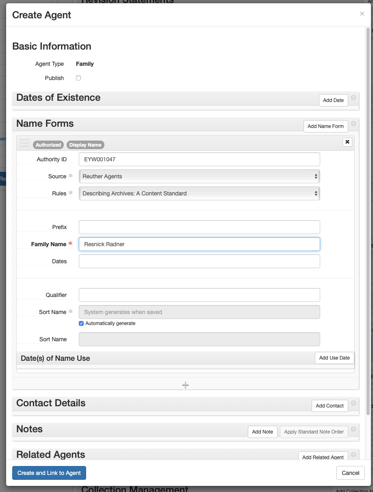
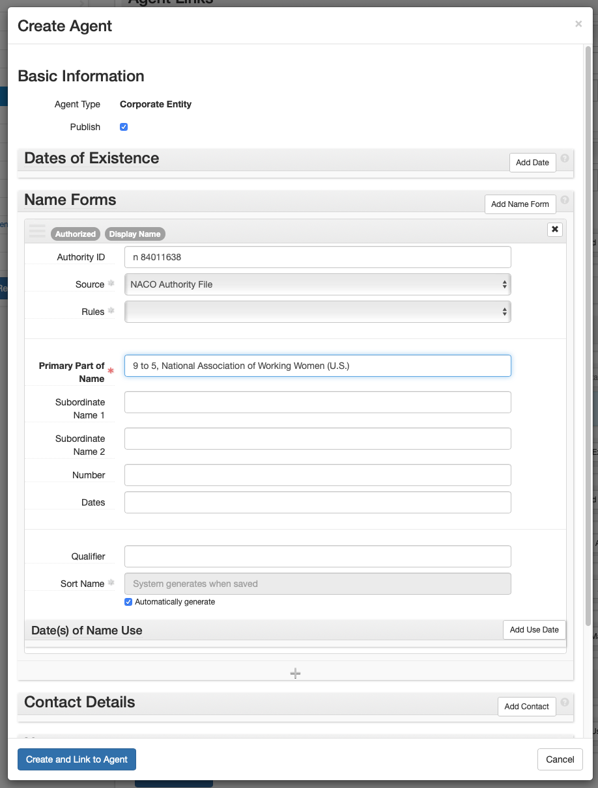

ArchivesSpace: Agent and Subject Records¶
Agent and subject records are defined in their subsections below.
Agents and Subjects in ASpace can be created two ways:
- Use the Create menu. Select: Create > [Agent/Subject] Record. An empty agent or subject record will appear. Fill in and edit the fields as indicated below.
- Create an agent or subject record from within an Accession or Resource record
- Select: Add in the [Agent/Subject] subrecord
- An empty [Agent/Subject] subrecord will appear. Fill in and edit the fields as indicated below.
The Agent or Subject record will contain more fields than those listed below, but do NOT enter/change any information in a field that is not indicated below.
Edit the information in [ ]s (and delete the brackets). Choose the proper selection from those listed in italics.
The instructions below can be used both for creating and editing agent and subject records.
Agents¶
Agents are created and/or selected for all accessions and resources. This is where the creator’s authority information is captured. The authority name is the Library of Congress Name Authority (lcna, i.e., NACO) or if the name does not exist, create one following DACS. The creator’s authority name may differ from its common name. For example, UAW’s authorized name heading is “International Union, United Automobile, Aerospace, and Agricultural Implement Workers of America.” The authority name is the agent.
- Role: Creator, Subject. Select “Creator” if the agent generated the collection, otherwise select “Subject.”
-
Agents: Enter the agent name by typing it into the field, or selecting “Browse” or “Create” from the dropdown.
- Browse: From the dropdown, select “Browse.” Search for the agent using the box in the upper left, use the list to browse for the box, and/or use the facets listed on the left to narrow your search. After selecting the agent, select “Link to Agents.”

-
Create: To create a new agent, select “Create” from the dropdown. Then choose the creator type from the dropdown list [Person, Family, Corporate Entity, Software].
-
Person:
- Basic Information > Publish: Check.
- Dates of Existence: Select “Add Date” if using the agent is a Reuther Agent, or the NACO agent has a date.
- Label: Existence
- Expression: Only use if entering circa dates or active dates. Only enter active date(s) (date range agent participated, e.g., 1900-1932; 20th century; 1975) if agent is a Reuther agent and birth date cannot be determined or approximated.)
- Type: Range, Single
- Certainty: Leave blank if date is confirmed, otherwise select “Approximate” if using circa or active dates.
- Name Forms > Authority ID: If using a NACO authority record, enter the LC Control no. If creating a Reuther Agent, enter the next available Reuther Agent ID from the Reuther Agent Numbers spreadsheet. Enter the new agent on the spreadsheet next to the ID.
- Name Forms > Source: Reuther Agents, NACO Authority File
- Name Forms > Rules: Reuther Agents: Describing Archives: A Content Standard; NACO Authorities: Anglo-American Cataloging Rules, Resource Description and Access (AACR for all non-RDA agents)
- Name Forms > Name Order: Leave as “Indirect.”
- Name Forms > Prefix: Record the prefix if applicable.
- Name Forms > Title: Record the title if applicable
- Name Forms > Primary Part of Name: Record the last name.
- Name Forms > Rest of Name: Record the first and middle names.
- Name Forms > Suffix: Record a term that follows the name.
- Name Forms > Fuller Form: If the first and middle names were abbreviated, this is where the complete versions are recorded.
- Name Forms > Number: Add number if applicable.
- Related Agents: If there is a related agent, add it (see Appendix for related agent rules).
- Create and Link to Agent: Select.

-
Family:
- Basic Information > Publish: Check.
- Dates of Existence: Select “Add Date” if using the agent is a Reuther Agent, or the NACO agent has a date.
- Label: Existence
- Expression: Only use if entering circa dates or active dates. Only enter active date(s) (date range agent participated, e.g., 1900-1932; 20th century; 1975) if agent is a Reuther agent and birth/creation date cannot be determined or approximated.)
- Type: Range, Single
- Certainty: Leave blank if date is confirmed, otherwise select “Approximate” if using circa or active dates.
- Name Forms > Authority ID: If using a NACO authority record, enter the LC Control no. If creating a Reuther Agent, enter the next available Reuther Agent ID from the Reuther Agent Numbers spreadsheet. Enter the new agent on the spreadsheet next to the ID.
- Name Forms > Source: Reuther Agents, NACO Authority File
- Name Forms > Rules: Reuther Agents: Describing Archives: A Content Standard; NACO Authorities: Anglo-American Cataloging Rules, Resource Description and Access (AACR for all non-RDA agents)
- Name Forms > Prefix: Record the prefix if applicable.
- Name Forms > Family Name: Enter the creator name.
- Related Agents: If there is a related agent, add it (see Appendix for related agent rules).
- Create and Link to Agent: Select.

-
Corporate Entity:
- Basic Information > Publish: Check.
- Dates of Existence: Select “Add Date” if using the agent is a Reuther Agent, or the NACO agent has a date.
- Label: Existence
- Expression: Only use if entering circa dates or active dates. Only enter active date(s) (date range agent participated, e.g., 1900-1932; 20th century; 1975) if agent is a Reuther agent and birth/creation date cannot be determined or approximated.)
- Type: Range, Single
- Certainty: Leave blank if date is confirmed, otherwise select “Approximate” if using circa or active dates.
- Name Forms > Authority ID: If using a NACO authority record, enter the LC Control no. If creating a Reuther Agent, enter the next available Reuther Agent ID from the Reuther Agent Numbers spreadsheet. Enter the new agent on the spreadsheet next to the ID.
- Name Forms > Source: Reuther Agents, NACO Authority File
- Name Forms > Rules: Reuther Agents: Describing Archives: A Content Standard; NACO Authorities: Anglo-American Cataloging Rules, Resource Description and Access (AACR for all non-RDA agents)
- Name Forms > Primary Part of Name: Enter the creator name.
- Name Forms > Subordinate Name 1: Enter the narrower creator name (e.g., Local name)
- Name Forms > Qualifier: Enter any qualifier (e.g., location such as “Detroit, Mich.”)
- Related Agents: If there is a related agent, add it (see Appendix for related agent rules).
- Create and Link to Agent: Select.

-
Related Agent Rules¶
To add a related agent, follow these rules for determining the relationship type:
Linking to a corporate entity:
- Associative: For a person holding the office named in the corporate agent record.
- Earlier: For a previous earlier form of the corporate agent record.
- Later: For a subsequent form of the corporate agent record.
- Subordinate: For a corporate entity “contained” in the corporate name.
- Superior: For a corporate entity “containing” the corporate name.
Linking to a family name:
- Associative: For a person who is a member of the family.
- Earlier: For a previous version of the family name.
- Later: For a subsequent version of the family name.
Linking to a personal name:
- Associative: For a corporate name, or other person, to which the person is associated
- Child: For a person who is a child of the named person.
- Earlier: For an earlier form of the named person.
- Later: For a later form of the named person.
- Parent: For a person who is the parent of the named person.
Donor Organization Names as ASpace Agents¶
Agents for our common donor organizations already exist in ASpace. Select the appropriate agent rather than creating a new one.
| Donor | Agent |
|---|---|
| AFA | Association of Flight Attendants (U.S.) |
| AFSCME | AFSCME |
| AFT | American Federation of Teachers |
| ALPA | Air Line Pilots Association |
| IWW | Industrial Workers of the World |
| JCA | Jewish Federation of Metropolitan Detroit |
| NALC | National Association of Letter Carriers (U.S.) |
| SEIU | Service Employees International Union |
| SWE | Society of Women Engineers |
| UAW | International Union, United Automobile, Aerospace, and Agricultural Implement Workers of America |
| UFW | United Farm Workers |
| WSU | Wayne State University |
Subjects¶
Subjects are created and/or selected for accessions that will be opened immediately and all resources. A subject provides authoritative context about the collection The subject is taken from the Library of Congress Subject Headings (LCSH) or if the subject does not exist, create one following DACS.
- Select: Add Subject
-
Subjects: Begin typing, browse, or create subject. If creating a new subject, check LCSH first.
- Browse: From the dropdown, select “Browse.” Search for the subject using the box in the upper left, use the list to browse for the box, and/or use the facets listed on the left to narrow your search. After selecting the subject, select “Link to Agents.”

- Create: To create a new subject, select “Create” from the dropdown.
- Create Subject > Basic Information
- Authority ID: If using LCSH, enter LC Control no. If using Reuther Taxonomy, leave blank.
- Source: If using LCSH select: Library of Congress Subject Headings; If creating a new Reuther Taxonomy term, select: Reuther Taxonomy; select Art & Architecture Thesaurus, if using it; select TGM II, Genre and physical characteristics, if using it.
- Terms and Subdivisions
- Term: Enter the term
- Type: If using LCSH, select the subject heading type (e.g., Topical – found by selecting the “Labeled Display” tab on LCSH MARC record webpage)
- Create and Link to Subject: Select
- Create Subject > Basic Information